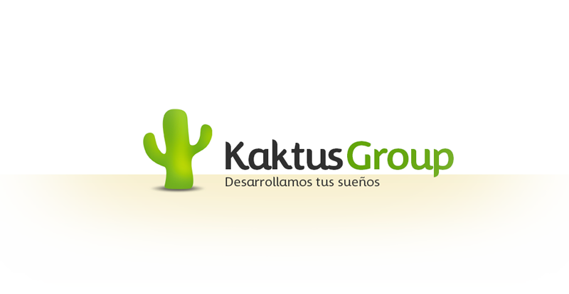

Volver

Proyecto de Logística y Trazabilidad Automotriz
Documentación
Leandro Funes - Leticia Polanco - Cristian Yelpo
Proyecto
Programación
Base de Datos
Formación Empresarial
Taller
ADA
Sist. Operativos
Extra
Proyecto
Creación de grupo y roles
Reglamento de grupo
Formato de Actas
Ciclo de Vida
Tabla de recursos
Tabla de actividades
Doc. de inicio
GANTT
PERT
Actas
Planificación de reuniones Ordinarias
Pizarra virtual al día
Programación
Fundamentación tecnológica
Manual Install BD
Manual de app
Archivo BD
Código App
.exe App
Base de Datos
MER
DER
Pasaje Tablas
Diccionario Datos
DBSchema
DDL
Formación Empresarial
Logo y Fundamentación
Contrato Social
Misión, Visión y Objetivos
Registro DGI-BPS
Dec. Jurada BPS
Planilla de Trabajo
Bse
Taller de Mantenimiento
Equipamiento de Red
Primer Presupuesto
Planos Patio & Puerto
Esquema Lógico
Análisis y Diseño de Aplicaciones
Relevamiento
ESRE
Modelo de Desarrollo
Sistemas Operativos
IMPORTANTE: Leer primero
Script ABM
Script Entorno
Manual CentOS
Install Entorno de Trabajo
Manual ABM
.OVA v1.0
Extra
Micromotors